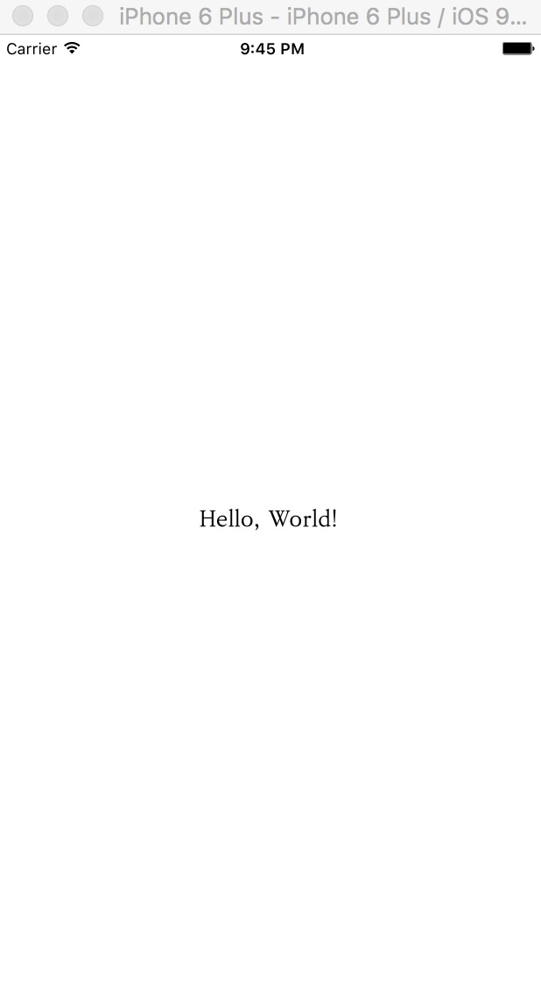
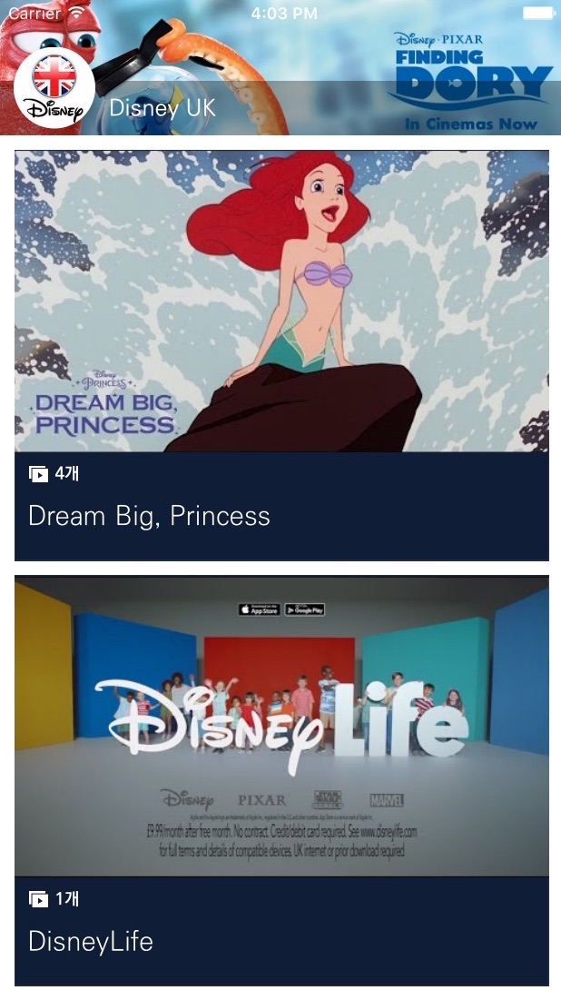

시작하기
환영합니다. 이 문서를 통해 여러분은 잼킷을 설치하여 네이티브 앱을 즉시 만들 수 있는 방법을 배울 수 있습니다. 만약 잼킷이 이미 설치되어 있고 잼킷을 이용하여 앱을 생성하는 방법을 알고 있다면 바로 튜토리얼 문서로 건너뛰어도 좋습니다.
준비사항
잼킷을 사용하기 위해서는 Mac이 필요합니다. 아쉽게도 현재로서는 MS윈도우를 지원할 계획은 없습니다. Mac에 Xcode와 node.js, 잼킷 명령어 도구를 설치하면 사전 준비는 완료됩니다.
우선 Homebrew를 이용하여 node.js를 설치합니다.
brew update
brew install node
node가 설치되었다면 npm 명령어를 이용하여 잼킷 명령어 도구를 설치합니다.
sudo npm install -g jamcmd
Xcode는 Mac App Store에서 설치하시기 바랍니다. Xcode가 설치되었다면 아래 명령을 통해 Xcode 명령어 도구를 설치하셔야 합니다.
xcode-select --install
축하합니다. 이제 잼킷을 사용하여 네이티브 앱을 만들 준비가 완료되었습니다.
10초 만에 앱 만들기
잼킷을 사용하여 만들 첫번째 앱은 HelloWorld라는 이름의 앱입니다. 아래 명령을 수행하면 HelloWorld란 디렉토리에 기본 앱이 자동으로 생성됩니다. 이 때 생성된 앱은 잼킷이 기본으로 제공하는 템플릿의 복사본이며, 잼킷 템플릿 저장소에서 잼킷이 제공하는 다양한 종류의 템플릿을 확인할 수 있습니다.
jamkit create HelloWorld
HelloWorld라는 디렉토리가 생성되었다면 해당 디렉토리로 이동하여 앱을 실행할 수 있습니다. 아래 명령을 수행하면 Xcode와 함께 설치된 iOS 시뮬레이터가 자동으로 실행되고 그 안에서 HelloWorld 앱이 실행되는 것을 확인하실 수 있습니다.
cd HelloWorld
jamkit run
아래와 같은 화면이 나온다면 첫번째 앱을 성공적으로 실행한 것입니다.

유튜브 채널 앱 만들기
앱을 만드는 방법을 배웠으니 이제 좀더 유용한 앱을 만들어 보겠습니다. 잼킷이 제공하는 템플릿 중 하나인 유튜브 채널 템플릿을 사용한다면 단숨에 멋진 유튜브 채널 앱을 만들 수 있습니다. 준비해야 할 것은 유튜브 채널 아이디 뿐입니다.
앱을 생성할 때 --template 옵션을 사용하면 특정 템플릿을 지정할 수 있습니다. 이번 예제에서 사용할 템플릿은 youtube-channel-basic 입니다. 또한 --template 옵션과 함께 --language 옵션을 지정하면 템플릿에서 사용할 언어를 지정할 수 있습니다. 이번 예제에서는 한국어를 사용해보도록 하겠습니다. 한국어는 ko 입니다.
jamkit create --template=youtube-channel-basic --language=ko YouTubeSample
cd YouTubeSample
jamkit run
위의 명령을 수행하면 방금 만든 유튜브 앱이 실행됩니다. 하지만 제대로 된 화면이 나오지 않을 것입니다. 당연하게도 아직 유튜브 채널 아이디를 앱 내에 지정한 적이 없기 때문입니다. 앱 디렉토리 안에서 catalog_home.sbml 파일을 찾아 파일 내의 ${YOUTUBE_CHANNEL_ID}를 실제 유튜브 채널 아이디로 변경해주시기 바랍니다. 예제에서는 디즈니 영국 공식 채널 아이디인 UCQphRgAhj5UxktrQNP3WF5g를 사용하였습니다. 그 뒤 파일을 저장하면 iOS 시뮬레이터의 앱이 변화를 감지하여 새로운 화면으로 업데이트할 것입니다. catalog_home.sbml 파일의 위치는 아래 내용을 참고하시기 바랍니다.
catalogs/MainApp/catalog_home.sbml
아래와 같은 화면이 나왔다면 유튜브 채널 앱을 성공적으로 만든 것입니다.

카카오톡으로 앱 전달하기
앱을 시뮬레이터에서만 사용하려고 만드는 사람은 없을 것입니다. 잼킷으로 만든 앱은 카카오톡이나 메일, 웹 링크 등으로 친구들에게 전달할 수 있습니다. 이렇게 앱을 전달하기 위해서는 먼저 jam 파일을 만들어야 합니다. jam 파일이란 잼킷으로 제작한 앱을 하나의 파일로 묶은 패키지를 말합니다. jam 파일을 만들기 위해서는 build 명령어를 사용합니다. 앱 디렉토리 안에서 아래 명령을 수행하면 해당 디렉토리 안에 {프로젝트명}.jam 이라는 파일이 생성됩니다.
jamkit build
이렇게 생성된 jam 파일을 카카오톡이나 메일로 친구들에게 전달하면 클릭 한번으로 바로 앱을 사용할 수 있습니다. 물론 jam 파일을 전달받은 친구의 스마트폰에 잼킷 브라우저 기능이 탑재된 앱이 설치되어 있어야 합니다. (잼킷 브라우저 기능을 탑재한 Slidly 앱이 2016년 8월 중 런칭 예정입니다.)
앱 배포하기
잼킷으로 만든 앱은 애플 앱스토어와 구글 플레이 등의 안드로이드 마켓으로도 배포할 수 있습니다. 앱을 배포하는 데 드는 비용은 무료입니다. 무료 앱에는 광고가 게재될 수 있으며, 광고를 제거한 월 과금 방식의 유료 버전으로 배포할 수도 있습니다. (2016년 7월 20일 현재, 앱 배포 기능은 개발 진행 중에 있습니다. 그 전에 배포가 필요하다면 help@bookjam.co.kr로 연락주시기 바랍니다.)
더 알아보기
잼킷에 관심이 생기셨나요? 그렇다면 한국 잼킷 사용자 모임을 방문해보세요. 앞으로 잼킷과 관련된 새로운 소식이나 사용법 강좌 등이 잼킷 사용자 모임을 통해 공개될 예정입니다.